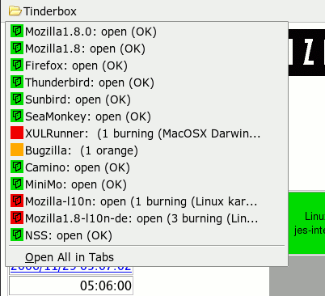

This page collects assorted mozilla related stuff that needs a place online.
Styling microsummaries
 By styling microsummaries
according to their changing content it is possible to replace several status reporting extensions
and to save statusbar real estate. Creating those microsummaries yourself is much easier than developping extensions.
As an example, let's see how one creates a microsummary replacement for the tinderstatus extension.
First, if the web site in question (in our case http://tinderbox.mozilla.org/showbuilds.cgi?) does not provide any microsummary
we need to find or write a generator. The one I found had problems parsing some of the tinderbox pages
and did not quite follow the suggested format but it got me started. See the microsummary wiki
for information about generators. You can either download my microsummary generator for
tinderbox status pages or it directly from here.
Next, create a Tinderbox folder in your personal bookmarks toolbar and add bookmarks for your favourite tinderboxens, using the microsummaries.
Finally, style the contents of the Tinderbox folder by putting something like the following CSS in userChrome.css in
your profile's chrome folder:
The two images for open and closed tree state are taken from the tinderstatus extension and they need to go into your profile's chrome folder as well.
A few things to note:
All the CSS above applies only to entries within the Tinderbox folder in your personal bookmarks toolbar. It does not apply to the entries in the bookmarks menu (intentionally), but it's easy to change this.
You see how the label of the microsummary bookmark menutitem is used to generate different markup depending on the state (content) of the bookmark.
Also note how the favicon is made invisible by hidding the .menu-iconic-icon so that the background image for .menu-iconic-left is shown. I cannot ovverride the favicon directly because an XBL binding is involved (maybe someone else can...).
Similarly one could change the text or background colour of the bookmark text by styling the label child of menuitem.
Disclaimer: In fact I like the very fine tinderstatus extension.
Fortunately, its author is also "the microsummary guy" so replacing his extension by microsummaries should be OK :).
 and closed tree state are taken from the tinderstatus extension and they need to go into your profile's
and closed tree state are taken from the tinderstatus extension and they need to go into your profile's